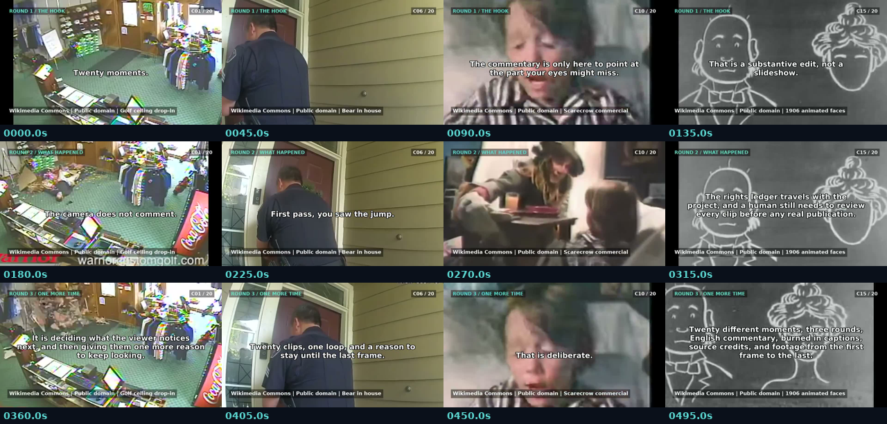

Frame 1 is real footage. No intro card, title card, method card, analytics essay, full-screen diagram or static slide. Every 3–5 seconds there is a cut, zoom, speed ramp or replay. Short English VO bursts sit over moving footage; native audio remains underneath. Small lower-thirds show the Wikimedia Commons source, round and clip counter.
Contact sheet

Technical QC (16/16) is NOT creative approval, legal clearance, human sign-off or a family-safety guarantee. No YouTube upload, publish, monetisation change, legal opinion, guaranteed views, virality, perfection or NASA endorsement is claimed. A human must still watch the full motion/native audio and review each clip's rights page before any real publication. V12 remains rejected and is not presented here.